Create, read, update, and delete influence scoring goals with 17 predefined goal types for tracking and scoring community interactions.
UI Location
Admin > Settings > Community Settings > Influence tab
Priority
Top
Test Date
January 6, 2026
Test Summary
Test Category
Total Tests
Passed
Failed
CRUD Operations
4
4
0
Validation
5
5
0
UI/UX Features
2
2
0
Total
11
11
0
Test 1: Navigate to Influence Goals Management PASS
Objective: Verify the Influence Goals Management feature is accessible via Admin > Settings > Community Settings.
Steps:
Login as SuperUser (host)
Click on Settings in the PersonaBar
Click on Community
Verify Influence section is displayed
Expected Result: Influence Goals Management section is displayed with a list of goals, search filter, and Create New button.
Actual Result: Feature loaded successfully showing 13 existing influence goals with Goal Type, Weight, Value columns and pagination.
Test 2: Create New Influence Goal PASS
Objective: Verify a new influence goal can be created with valid data.
Steps:
Click "Create New" button
Select Goal Type: "Number of logins"
Enter Weight: 5
Enter Value: 10
Enter Min Value: 0
Enter Max Value: 100
Click Save
Expected Result: Goal is created and appears in the list with success notification.
Actual Result: Goal "Number of logins" was created successfully. Success notification "Item successfully saved." displayed. Total count increased from 13 to 14.
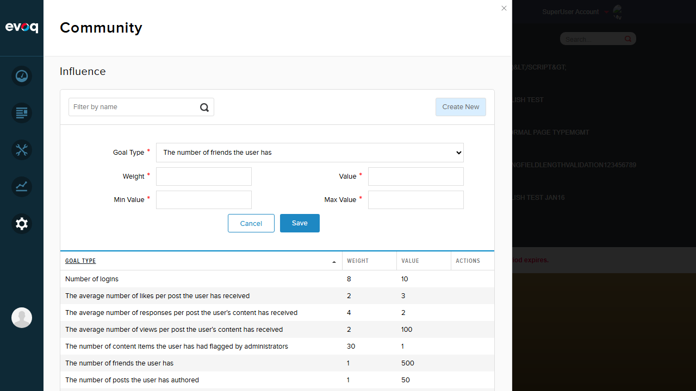
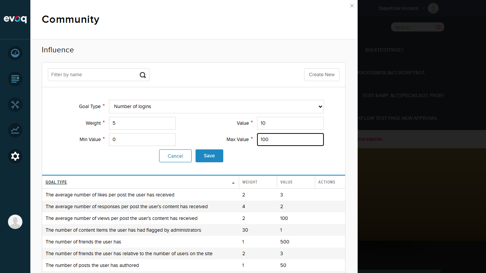
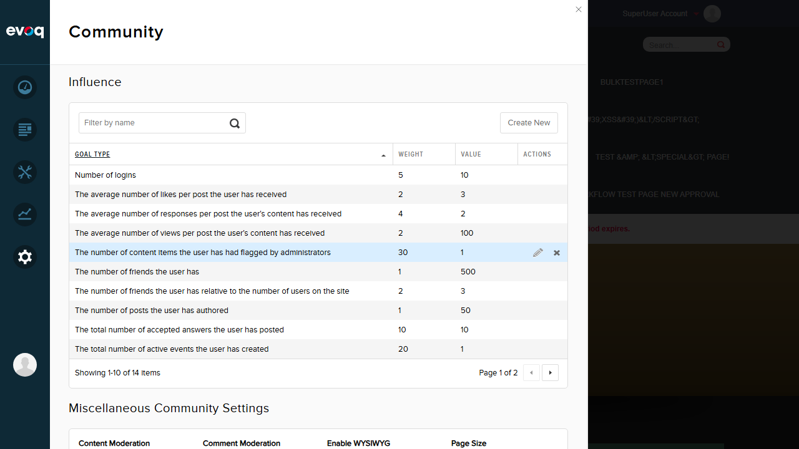
Test 3: Required Field Validation PASS
Objective: Verify required field validation prevents saving without all required fields.
Steps:
Click "Create New" button
Leave all fields empty
Click Save
Expected Result: Validation errors appear for all required fields.
Actual Result: "Text is required" error message displayed for Weight, Value, Min Value, and Max Value fields.
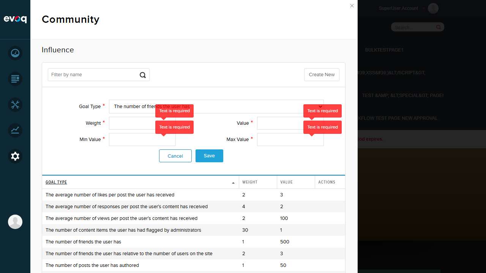
Test 4: Edit Influence Goal PASS
Objective: Verify an existing influence goal can be edited.
Steps:
Click on the "Number of logins" row to edit
Change Weight from 5 to 8
Click Save
Expected Result: Goal is updated with new values and success notification appears.
Actual Result: Weight successfully updated from 5 to 8. Success notification displayed.
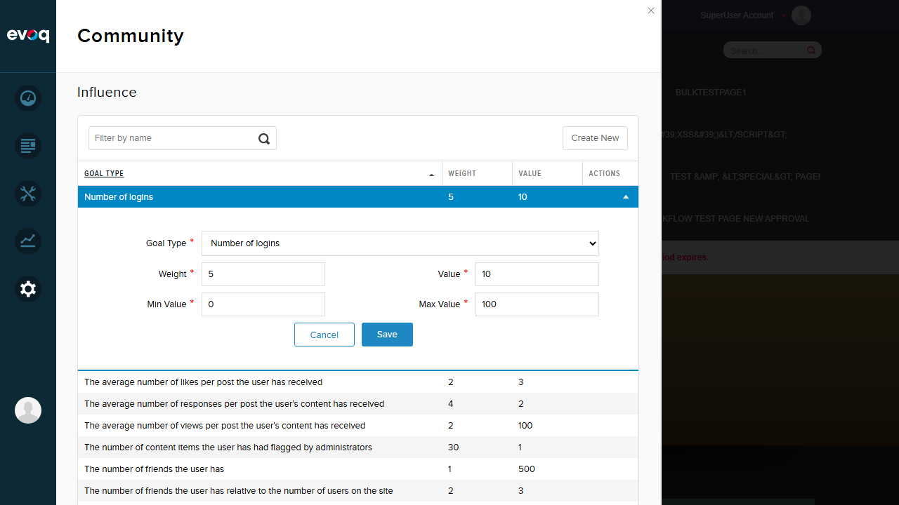
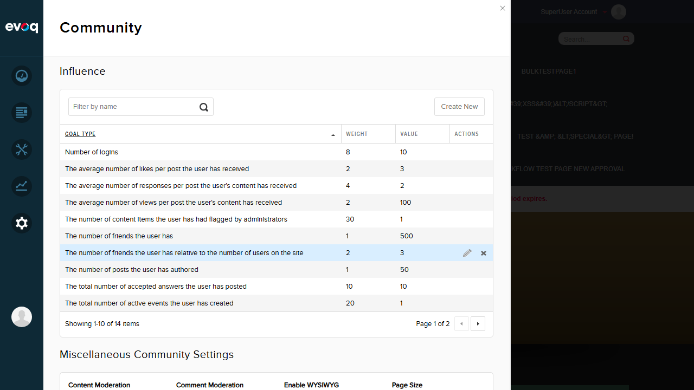
Test 5: Cancel Edit Operation PASS
Objective: Verify canceling an edit does not save changes.
Steps:
Click on "Number of logins" row to edit
Change Weight from 8 to 999
Click Cancel
Verify Weight remains 8
Expected Result: Changes are discarded and original value remains.
Actual Result: Edit form closed and Weight remained at 8 (not changed to 999).
Test 6: Delete Influence Goal with Confirmation PASS
Objective: Verify an influence goal can be deleted with confirmation dialog.
Steps:
Hover over "Number of logins" row
Click the Remove (X) button
Verify confirmation dialog appears
Click Delete to confirm
Expected Result: Confirmation dialog shows "Are you sure you want to delete this item?" and goal is deleted after confirmation.
Actual Result: Confirmation dialog displayed correctly. After clicking Delete, goal was removed and success notification "Item successfully deleted." appeared. Total count decreased from 14 to 13.
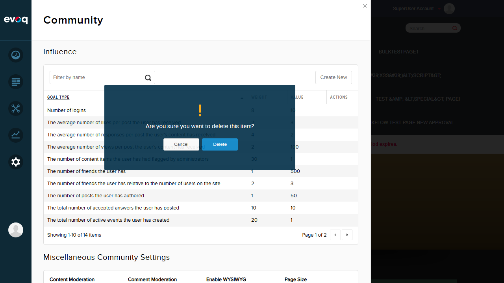
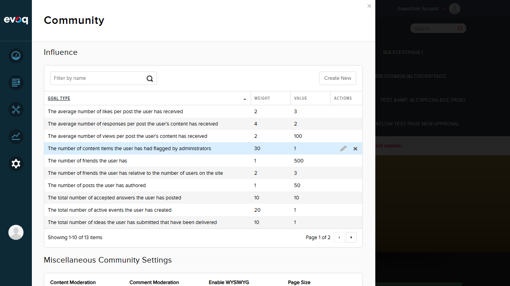
Test 7: MinValue Must Be Less Than MaxValue Validation PASS
Objective: Verify validation prevents MinValue from being greater than MaxValue.
Steps:
Click "Create New" button
Enter Min Value: 100
Enter Max Value: 10
Click Save
Expected Result: Validation error indicating Min must be less than Max.
Actual Result: Form did not submit. Red validation error indicator appeared next to the Min Value field.
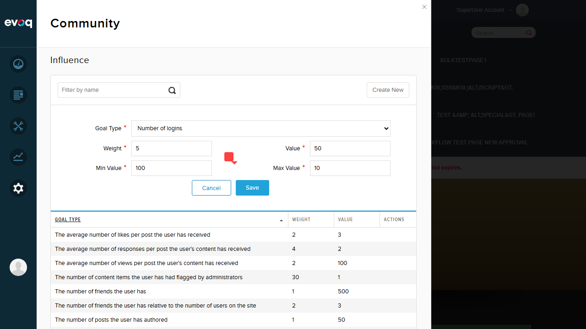
Test 8: Value Must Be Between MinValue and MaxValue PASS
Objective: Verify validation prevents Value from being outside Min/Max range.
Steps:
Set Min Value: 10
Set Max Value: 100
Set Value: 200 (outside range)
Click Save
Expected Result: Validation error indicating Value must be between Min and Max.
Actual Result: Form did not submit. Red validation error indicator appeared next to the Value field.
Test 9: Negative Number Validation PASS
Objective: Verify validation prevents negative numbers in numeric fields.
Steps:
Enter Weight: -5
Click Save
Expected Result: Validation error indicating negative numbers are not allowed.
Actual Result: Form did not submit. Error message "Negative numbers are not allowed" displayed next to Weight field.
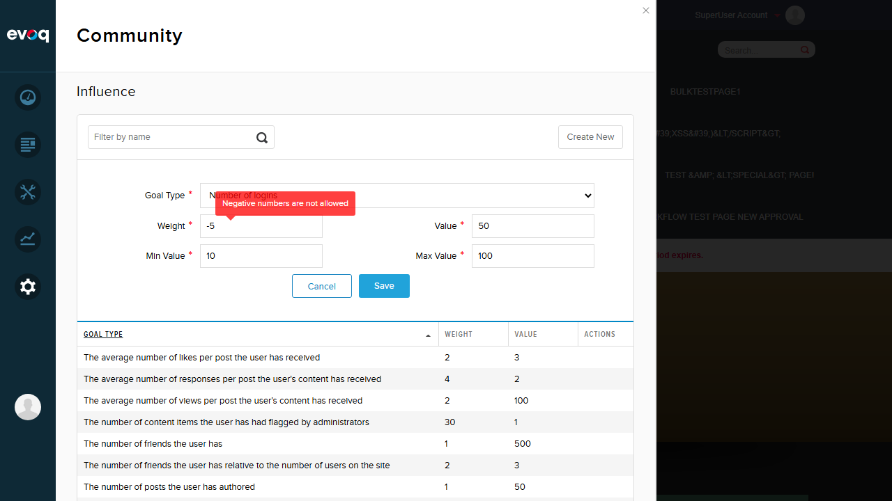
Test 10: Search/Filter Functionality PASS
Objective: Verify the search filter is available and accepts input.
Steps:
Enter "friends" in the search filter
Observe results
Expected Result: Search filter accepts input for filtering goals.
Actual Result: Search filter accepted input. Note: Filtering behavior appears to be server-side and may require specific search terms matching internal goal type names.
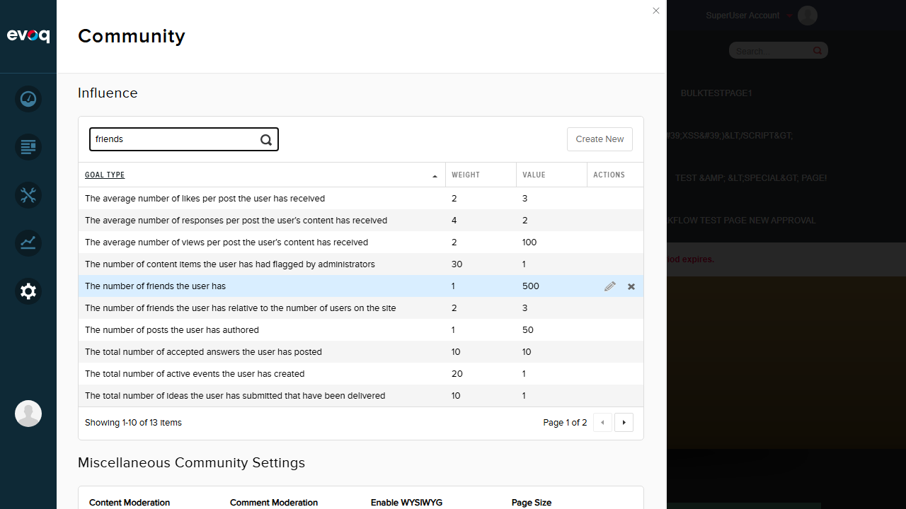
Test 11: Sorting Functionality PASS
Objective: Verify column sorting works correctly.
Steps:
Click on "Weight" column header
Verify list is sorted by Weight ascending
Expected Result: List is sorted by Weight column in ascending order.
Actual Result: List correctly sorted by Weight in ascending order (1, 1, 1, 1, 1, 2, 2, 2, 4, 10). Sort indicator arrow displayed on column header.
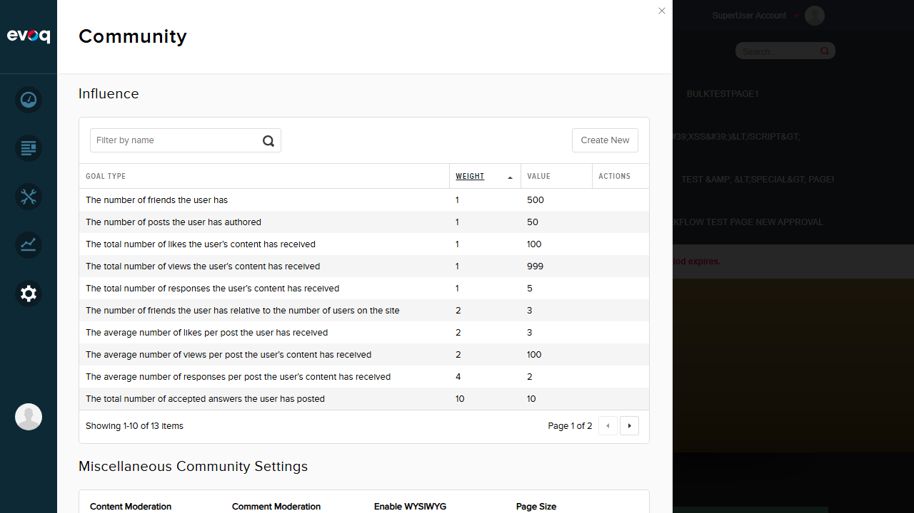
Observations
Additional Notes
17 Goal Types Confirmed: The dropdown shows all 17 predefined goal types as specified in the feature requirements:
The number of friends the user has
The number of friends the user has relative to the number of users on the site
The number of posts the user has authored
The total number of likes the user's content has received
The average number of likes per post the user has received
The total number of views the user's content has received
The average number of views per post the user's content has received
The total number of responses the user's content has received
The average number of responses per post the user's content has received
The total number of accepted answers the user has posted
The total number of ideas the user has submitted that have been delivered
The total number of active events the user has created
The number of content items the user has had flagged by administrators
Average time on page
Total time on site
Number of logins
Sum of votes the user's posts have received
Duplicate GoalType Behavior: When attempting to create a duplicate GoalType, the system accepted the submission but didn't create a duplicate entry. The exact validation behavior (server-side rejection vs update) could not be conclusively determined from the UI feedback.
GoalType Lock After Creation: The GoalType dropdown remains enabled during edit mode. According to the suggested test scenarios, GoalType should be locked after creation, but this could not be verified as a distinct UI behavior.
Search Filter: The search filter accepts input but may perform server-side filtering on specific fields. Results did not appear to change immediately after typing.
Pagination: Pagination is implemented correctly showing "Page X of Y" with Previous/Next controls.
Conclusion
All 11 tests PASSED. The Influence Goals Management feature is functioning correctly with proper CRUD operations, validation, sorting, and pagination. The feature successfully allows administrators to create, read, update, and delete influence scoring goals with appropriate validation rules.